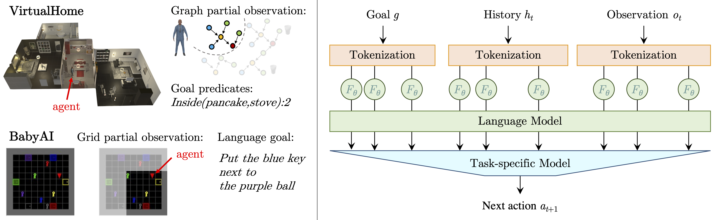
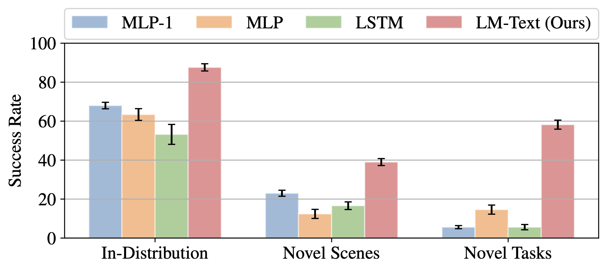
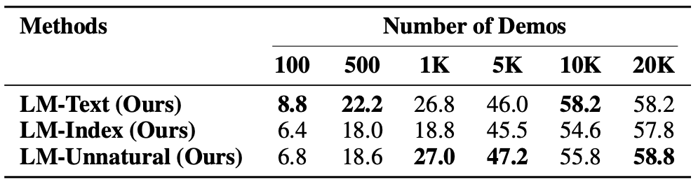
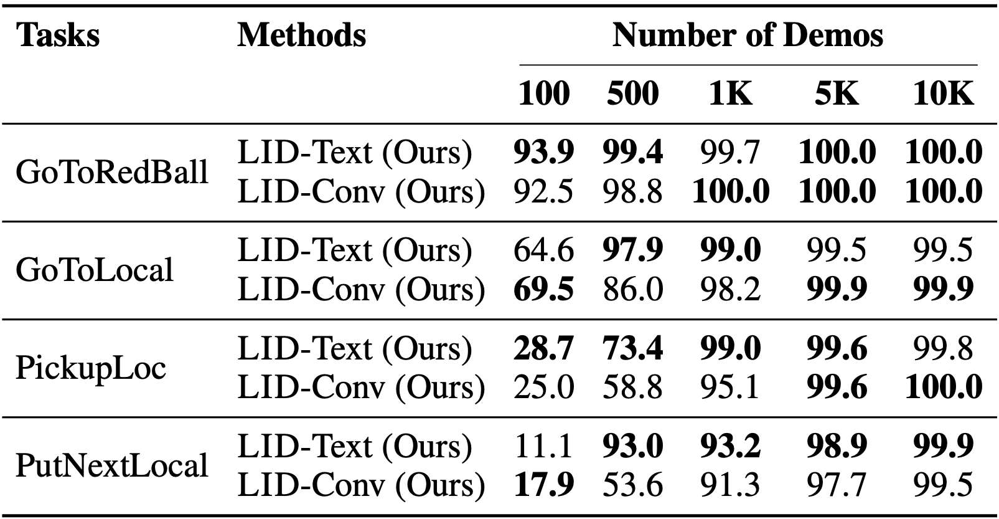
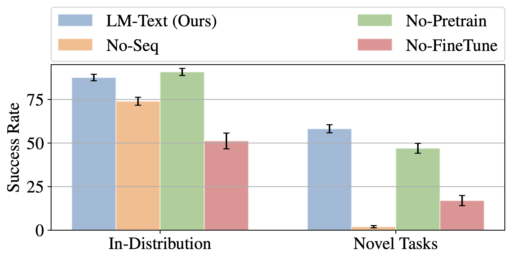

Can pre-trained language models be used as a general framework for tasks across different environment?
In this paper, we study this question through the lens of
embodied decision-making, investigating the effectiveness of LM pre-training as a general framework for learning policies across a variety of environments.
We propose to use
pre-trained language models as a general framework for interactive decision-making across a variety of environments by converting all policy inputs into sequential data.
This framework is generic, accommodating goals and environment states represented as natural language strings, image patches, or scene graphs.

Combinatorial generalization to out-of-distribution tasks
We find that using pre-trained LMs as policy initializers improves in-domain performance and enables several forms of strong generalization over tasks.
For i.i.d. training and evaluation tasks, we find that this approach yields 20% more successful policies than other baseline methods in VirtualHome.
For combinatorial generalization to out-of-distribution tasks, i.e. tasks involving new combinations of goals, states or objects, we find that LM pre-training confers even more benefits: it improves task completion rates by 43.6% for tasks involving novel goals.

Is the effective combinatorial generalization because LMs are effective models of relations between natural language descriptions of states and actions, or because they provide a more general framework for combinatorial generalization in decision-making?
We hypothesize and investigate three possible factors underlying the effectiveness of language modeling for generalization in policy learning:
(1) input encoding scheme;
(2) sequential input representations;
and (3) parameter pre-training.
(1) Input encoding scheme
We investigate (1) by encoding the environment as different types of sequences. Different input encoding schemes have only a negligible impact on model performance: the effectiveness of language modeling is not limited to utilizing natural strings, but in fact extends to arbitrary sequential encodings.

Success rates of policies trained with different input encodings in the Novel Tasks setting of VirtualHome. The text encoding is most sample-efficient, but all models converge to similar performance given sufficient training data.

Success rate of policies trained with text encoding vs. convolutional encoding in BabyAI. The text encoding is more sample-efficient, but both models converge to near perfect performance given sufficient training data.
(2) Sequential input representations
We investigate (2) by encoding observations with a single vector embedding, thereby removing its sequential structure (No-Seq). This operation significantly hurts the model's performance on novel tasks.
(3) Parameter pre-training
Finally, we investigate (3) by learning the parameters of the policy network from scratch (No-Pretrain). The success rate on novel tasks after removing the pre-trained LM weights drops by 11.2%.

"ML-Text (Ours)"" refines a pre-trained LM while "No-Pretrain" learns it from scratch. "No-FineTune" freezes the pre-trained weights. "No-Seq" uses non-sequential inputs. Fine-tuning the pre-trained weights and the usage of sequential encoding are important for combinatorial generalization.
We find that sequential representations (vs. fixed-dimensional feature vectors) and the LM objective (not just the transformer architecture) are both important for generalization, however, the input encoding schemes (e.g. as a natural language string vs. an arbitrary encoding scheme) has little influence.
 We show two examples of successes in VirtualHome, two examples of successes in BabyAI, and two failure cases caused by the grounding error and policy error. We only show a sub-trajectory in each example and omit most exploration actions to save space. The interacted objects are labelled by green bounding boxes.
We show two examples of successes in VirtualHome, two examples of successes in BabyAI, and two failure cases caused by the grounding error and policy error. We only show a sub-trajectory in each example and omit most exploration actions to save space. The interacted objects are labelled by green bounding boxes.